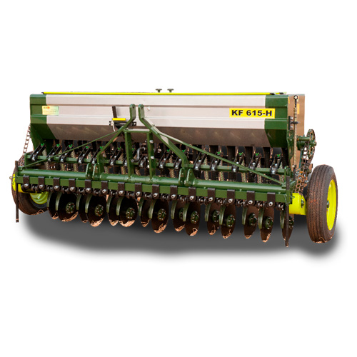

AVEIA
A produção de aveia é uma parte importante da agricultura em muitas regiões,
proporcionando um alimento nutritivo e versátil que é apreciado por suas propriedades
saudáveis e seu sabor agradável.
A aveia é um grão cereal amplamente conhecido por seus benefícios nutricionais
e versatilidade na culinária. Ela é uma excelente fonte de fibras solúveis,
especialmente betaglucana, que pode ajudar
a reduzir o colesterol LDL no sangue, promovendo assim a saúde cardiovascular.
Além das fibras, a aveia contém proteínas, vitaminas do complexo B, ferro,
magnésio e zinco, tornando-a um alimento nutritivo e saudável.
Aveia possui ciclos fenológico que podem ser divididos em:
6 fases
• Germinação e Emergência:
Após o plantio, as sementes de aveia germinam quando as condições de
temperatura e umidade são adequadas. O embrião da
semente se desenvolve e a plântula emerge do solo
• Estádios Vegetativos:
A aveia passa por vários estádios vegetativos, caracterizados pelo
crescimento das folhas e pelo desenvolvimento do sistema radicular.
Durante essa fase, a planta foca principalmente no crescimento vegetativo,
formando folhas e ganhando altura.
• Formação do Colmo:
À medida que a planta continua a crescer, ocorre a formação do colmo
principal, que suportará as espigas de aveia. Este estádio marca a
transição da fase vegetativa para a fase reprodutiva
• Floração:
A aveia produz inflorescências chamadas espigas, onde ocorre a floração.
As flores se desenvolvem e são polinizadas, dando origem aos grãos de aveia.
• Desenvolvimento do Grão:
Após a polinização, os grãos de aveia começam a se desenvolver. Durante este
estádio, os grãos acumulam amido, proteínas e outros nutrientes essenciais
para o seu crescimento e maturação
• Maturação e Colheita:
Finalmente, os grãos de aveia atingem a maturidade, o que é
determinado pela cor e pela consistência do grão. Neste ponto, a aveia
está pronta para ser colhida. A colheita ocorre quando os grãos estão secos
o suficiente para serem armazenados ou processados.
Clima
A aveia cresce melhor em temperaturas moderadas durante sua estação de crescimento,
em climas temperados, com temperaturas moderadas durante a estação de crescimento.
Regiões com verões não muito quentes e invernos não muito rigorosos são ideais.
A precipitação deve ser adequada e bem distribuída ao longo do ciclo de crescimento da aveia.
A faixa ideal de temperatura varia de cerca de 15°C a 25°C durante o dia. Temperaturas muito
altas podem afetar negativamente o desenvolvimento da planta, especialmente durante a floração
e a formação dos grãos.
A aveia prefere locais com boa luminosidade, especialmente durante o estágio de crescimento vegetativo.
A luz solar é essencial para o desenvolvimento saudável das plantas e para a formação adequada dos grãos.
A aveia requer um suprimento adequado de água para seu crescimento saudável. Ela pode tolerar condições de
seca moderada, mas umidade irregular ou insuficiente pode afetar negativamente o rendimento e a qualidade dos grãos.
A aveia pode ser cultivada em uma ampla faixa de altitudes, dependendo das condições climáticas locais. No entanto,
altitudes muito elevadas podem apresentar desafios devido às temperaturas mais frias e à menor disponibilidade de água
Escolha da área
A aveia cresce melhor em climas temperados, com temperaturas moderadas durante a estação de crescimento. Regiões com verões
não muito quentes e invernos não muito rigorosos são ideais. A precipitação deve ser adequada e bem distribuída ao longo do
ciclo de crescimento da aveia.
O solo ideal para a aveia é bem drenado, profundo e fértil. A aveia pode crescer em uma variedade de tipos de solo, mas solos com boa
estrutura e teor adequado de nutrientes são preferíveis para obter altos rendimentos e grãos de qualidade.
A topografia da área escolhida também é importante. Terrenos planos ou suavemente inclinados facilitam as operações de cultivo, irrigação
e colheita. Áreas muito íngremes podem ser mais difíceis de manejar mecanicamente.
A aveia precisa de um suprimento adequado de água para um crescimento saudável. A disponibilidade de água, seja através de chuvas adequadas
ou irrigação, é crucial para garantir um bom rendimento.
A área escolhida deve ser facilmente acessível para o transporte de insumos agrícolas e para o escoamento da produção. Infraestrutura como
estradas, armazéns e instalações de processamento também são importantes para facilitar o manejo da produção.
Preparação e adubação do solo
Antes do plantio, o solo deve ser arado ou gradeado para quebrar torrões e garantir uma superfície nivelada. Isso facilita a semeadura e o
estabelecimento inicial das plantas.É importante controlar as plantas daninhas antes do plantio da aveia para reduzir a competição por
nutrientes, água e luz. Isso pode ser feito por meio de capina manual, uso de herbicidas ou métodos de cobertura do solo. O pH do solo deve
ser verificado e corrigido, se necessário, para um intervalo ideal para o crescimento da aveia, que geralm é entre 5,5 e 7,0. Isso pode ser
feito aplicando calcário para aumentar o pH ou enxofre elementar para diminuí-lo. Antes da adubação, é crucial realizar uma análise de solo para
determinar os nutrientes disponíveis e suas necessidades. Isso ajuda a planejar a adubação de maneira mais precisa e eficiente. Com base na
análise de solo, são aplicados adubos orgânicos (como esterco ou compostos) e/ou adubos minerais (como nitrogênio, fósforo, potássio e
micronutrientes). A quantidade e o tipo de adubo dependem das necessidades específicas da aveia em cada estágio de crescimento. A fertilização
de base é feita antes do plantio para fornecer nutrientes essenciais para o crescimento inicial da aveia. A fertilização de cobertura pode ser
realizada durante o crescimento da cultura para complementar os nutrientes conforme necessário. Técnicas modernas, como a aplicação localizada
de fertilizantes ou a fertirrigação (fertilização via irrigação), podem ser utilizadas para otimizar a eficiência do uso de nutrientes e reduzir
o desperdício. Em algumas áreas, a prática de adubação verde pode ser benéfica, onde culturas como leguminosas são plantadas e incorporadas ao
solo antes do plantio da aveia, para aumentar a fertilidade do solo. Após a adubação e preparação inicial do solo, é essencial monitorar
regularmente o crescimento das plantas e os níveis de nutrientes no solo. Ajustes podem ser feitos ao longo do ciclo de crescimento da aveia
com base nas condições climáticas, no desenvolvimento da cultura e nos resultados da análise de solo.
Plantio
Escolha de variedades de aveia adequadas ao clima e às condições locais, levando em conta fatores como resistência a doenças, época de maturação
e características específicas de crescimento. A aveia pode ser plantada na primavera ou no outono, dependendo da região e das condições climáticas
locais. A escolha da época de plantio pode afetar o desenvolvimento e o rendimento da cultura. As sementes de aveia são semeadas diretamente no solo,
usando máquinas semeadoras. A profundidade de semeadura ideal geralmente varia de 2 a 5 cm, dependendo das condições do solo e do clima. A densidade
de semeadura recomendada varia de acordo com a variedade e as condições locais, mas geralmente está na faixa de 100 a 150 kg de sementes por hectare.
Isso pode ser ajustado com base na germinação das sementes e nas condições do solo. O espaçamento entre as fileiras de semeadura geralmente varia de
10 a 20 cm, dependendo do equipamento usado e das práticas locais. Em algumas situações, pode ser aplicada uma adubação de base no momento da semeadura
para fornecer nutrientes essenciais às plantas jovens. A irrigação deve ser feita de maneira apropriada para evitar o encharcamento do solo. Após o plantio,
é importante monitorar e controlar as plantas daninhas para reduzir a competição por nutrientes, água e luz. Durante o crescimento inicial da aveia, é
importante monitorar regularmente o desenvolvimento das plantas para detectar sinais de problemas como pragas, doenças ou deficiências nutricionais
Controle de pragas e doenças
Realize inspeções regulares para detectar a presença de pragas, como insetos e ácaros, nas plantas de aveia. Pragas comuns incluem pulgões, gorgulhos, e tripes.
Identifique corretamente as pragas presentes para determinar o melhor método de controle. Algumas pragas podem ser controladas com métodos culturais, como rotação
de culturas, enquanto outras podem exigir o uso de inseticidas específicos. Práticas agrícolas como o manejo adequado da rotação de culturas e a eliminação de restos
culturais após a colheita podem reduzir a incidência de pragas. Utilize agentes de controle biológico, como insetos predadores ou parasitoides, para controlar
populações de pragas de forma natural e sustentável. Quando necessário, aplique inseticidas de forma precisa e segura, seguindo as recomendações do fabricante e
considerando o impacto ambiental e a saúde humana. Práticas de manejo cultural, como rotação de culturas, plantio de variedades resistentes e manejo adequado da
irrigação, podem ajudar a prevenir o desenvolvimento de doenças. Remova e destrua plantas doentes para evitar a propagação de doenças. Mantenha o campo limpo de
resíduos vegetais que possam abrigar patógenos. Quando necessário, aplique fungicidas preventivos ou curativos de acordo com as recomendações técnicas para controlar
o desenvolvimento de doenças. Para evitar a resistência de fungos aos fungicidas, utilize diferentes modos de ação e faça a rotação de produtos.
Monitoramento e Manejo Integrado:
O manejo integrado de pragas e doenças (MIP) combina várias estratégias para minimizar o uso de pesticidas e reduzir os impactos ambientais. Isso inclui monitoramento
regular, uso de práticas culturais adequadas, uso de métodos biológicos sempre que possível e aplicação criteriosa de produtos químicos apenas quando necessário
Tecnologia
A produção da aveia envolve diversas tecnologias e práticas agrícolas modernas para otimizar seu cultivo e colheita. Essas tecnologias são essenciais para aumentar a
produtividade, reduzir custos e minimizar os impactos ambientais na produção de aveia.
Algumas das tecnologias comuns utilizadas incluem:
Sementes Melhoradas:Uso de variedades de sementes geneticamente melhoradas para aumentar o rendimento e resistência a pragas e doenças.
Máquinas Agrícolas: Equipamentos como tratores, semeadoras e colheitadeiras que ajudam no plantio, manejo e colheita eficientes.

Dependendo do modelo pode variar entre R$ 135.000,00/R$ 14.500,00
Tecnologia de Irrigação: Sistemas de irrigação modernos, como irrigação por gotejamento ou pivô central, para fornecer água de forma controlada e eficiente.
Fertilização Precisa: Uso de técnicas de fertilização de precisão, como a aplicação variável de nutrientes baseada em dados de sensoriamento remoto e análise do solo.
Monitoramento por Satélite e Drones: Uso de tecnologias de monitoramento por satélite e drones para avaliar a saúde das plantas, detectar áreas de estresse e monitorar
o desenvolvimento das culturas

Dependendo do modelo pode variar entre R$ 157.005,00/R$ 220.000,00
Colheita e Armazenamento: Implementação de técnicas avançadas de colheita mecânica e sistemas de armazenamento que preservem a qualidade dos grãos